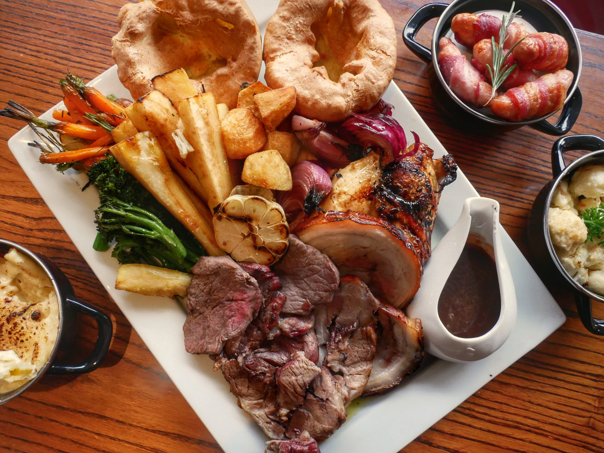
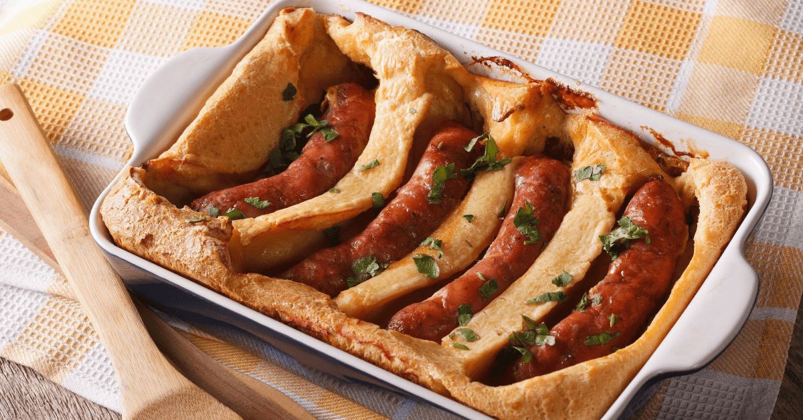
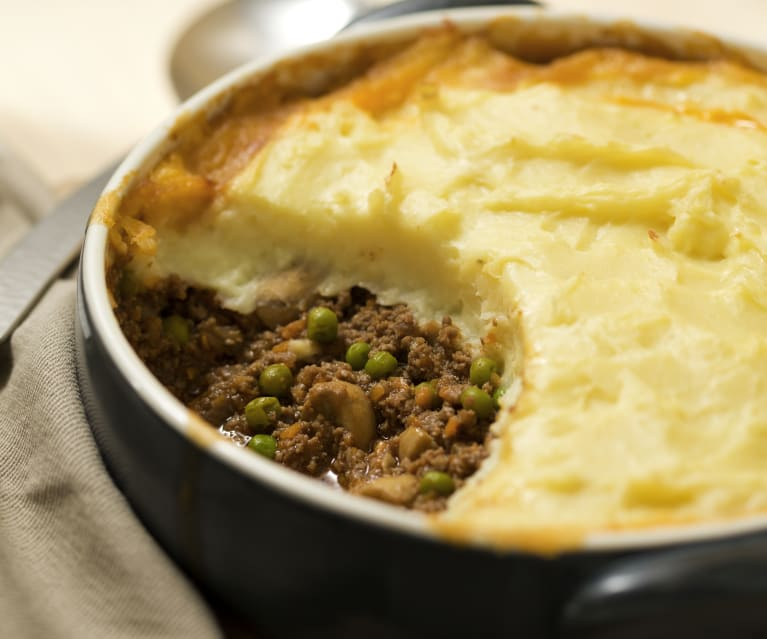
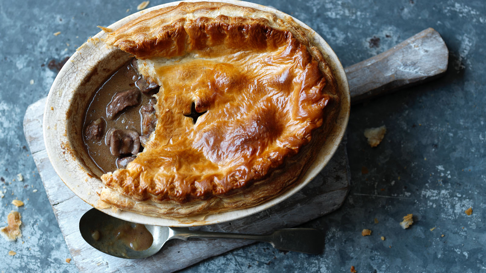

Wybierz kraj, o kótrego potrawach chcesz się dowiedzieć:
Fish and Chips
Znana wszystkim ryba z frytkami, potrawa popularna zwłaszcza w regionach nadbrzeżnych, ale znana i kochana w całej Anglii. W Anglii całość jest skrapiana octem słodowym i dodają szczyptę soli. Popularność zyskała w połowie XIX wieku przez spadek ceny ryb spowodowany rozwojem rybołóstwa i transportu kolejowego na wyspach brytyjskich. Tradycyjnie fish and chips podawane jest na wynos, oryginalnie zawijane w gazetę. Ciekawostka: w slangu, określenie "the chippie" oznacza bar lub sklep podający właśnie fish and chips.
Banger and Mash
Kiełbasa (bangers) z tłuczonymi ziemniakami (mash), często w połączeniu z grochem i sosem gravy. Kiełbasa może być wieprzowam wołowa lub jagnięca. Bardzo popularne danie w całym kraju, najczęściej serwowane w pubach. Danie to, nawet gdy przyrządzone w domu, jest przykładem typowego "pub grub", czyli prostego dania, które można przyrządzić szybko i w dużych ilościech.
Pełne brytyjskie śniadanie
Pakiet śniadaniowy składający się z bekonu, kiełbas, jajek, tostów, grochu, grzybów, pomidorów i placków ziemniaczanych. Potocznie nazywany "full English", ma też swoje odpowiedniki w Irlandii, Szkocji, Walii, Kornwalii i Irlandii Północnej. W zależnośći od regionu może się różnić pojedyńczymi składnikami, np. brakiem grzybów lub dodatkiem owsianki. Znaleźć odmiany tego dania można też w Stanach zjednoczonych, gdzie dodawane są zmażone ziemniaki bądź frytki, oraz w Hong Kongu, gdzie w zaleźności od lokalu można znaleźć różne połączenia brytyjskich i amerykańskich odmian.
Sunday Roast
Danie obiadowe składające się z pieczonego mięsa (wołowina, drób, jagnięcina lub wieprzowina), pieczonych ziemniaków, puddingu Yorkshire, nadzienia, warzyw ( zazwyczaj z dowolnego połączenia brukselki, grochu, marchwi, brokułów oraz kalafiora) i sosu gravy. Danie to można znaleźć w każdym anglojęzycznym kraju, z małymi różnicami w składnikach, np. w Afryce połódniowej składa się ze smażonego mięsa, smażonych ziemniaków, placka dyniowego, puddingu Yorkshhire i warzyw, w skład których może wejść ser kalafiorowo-brokułowy, szpinak w śmietanie, pieczona dynia piżmowa lub puree z owej dynii, zielona fasola, marchewki, groch, świeża kukurydza, buraki i słowdkie ziemniaki, często też pudding jest zamieniany na ryż w sosie gravy.

Toad in the Hole
Danie składające się z kiełbasy w cieście z puddingu Yorkshire połączonych z sosem gravy i warzywami. Mimo zawarcia w nazwie, danie nigdy nie było przyrządzanie z żaby. Historycznie, danie mogło być też przyrządzone z rumsztyku lub nerki jagnięcej.

Shepherd's Pie i Cottage Pie
Bardzo podobne do siebie ciasta z jedną różnicą w postaci używanego mięsa: pierwsze używa jagnięciny, a drugie - wołowiny. Jednakże oba ciasta robi się z mielonego mięsa, warzyw (marchwi, pomidorów i cebuli) oraz puree z ziemniaków umieszczonych nad mięsnym wypełnieniem. Oba ciasta występują w różnych połączeniach składników w zależności od regionu i państwa, w którym je przyrządzono, prykładowo w Brazylii ziemniaki są zastąpione puree z manioka, a samo danie często zawiera też ser i mięso z kurczaka, dodatkowo czasami zamiast wołu używa się dorsza.

Steak and Kidney Pie
Wołowina, nerki, smażona cebula i sos gravy zawinięte w ciasto podane najczęściej z warzywami. Taka kombinacja daje nam ciasto będące czołowym przedstawicielem kuchnii brytyjskiej. W slangu na ciasto często używa się dziwacznych rymów do jego nazwy, np. Kate and Sidney pie, snake and kiddy pie, czy snake and pygmy pie.

Walia!
ryba z frytkami, potrawa popularna zwłaszcza w regionach nadbrzeżnych, ale znana i kochana w całej Anglii
Scotland Forevaaaaa!
ryba z frytkami, potrawa popularna zwłaszcza w regionach nadbrzeżnych, ale znana i kochana w całej Anglii
Irlandia!
ryba z frytkami, potrawa popularna zwłaszcza w regionach nadbrzeżnych, ale znana i kochana w całej Anglii